import os
from PIL import Image
def fragment_and_save_image(image_path, rows, cols, output_dir):
# Listar arquivos na pasta
archives = os.listdir(image_path)
# Listar arquivos recortados
archive_list = []
# Abrir a pasta
for n, archive in enumerate(archives):
jpg = image_path + '/' + archive
# Abrir a imagem
image = Image.open(jpg)
width, height = image.size
# Calcular o tamanho de cada fragmento
fragment_width = width // cols
fragment_height = height // rows
# Criar o diretório de saída se não existir
if not os.path.exists(output_dir):
os.makedirs(output_dir)
for i in range(rows):
for j in range(cols):
left = j * fragment_width
upper = i * fragment_height
right = (j + 1) * fragment_width
lower = (i + 1) * fragment_height
# Definindo número do recorte:
n_r = os.listdir(f'{image_path}/')[n].split('.')[0]
# Recortar o fragmento
fragment = image.crop((left, upper, right, lower))
# Adicionar arquivo recortado à lista
archive_list.append(f'fragment_{n_r}_{i}_{j}.png')
# Salvar o fragmento como arquivo PNG
fragment_path = os.path.join(output_dir, f'fragment_{n_r}_{i}_{j}.png')
fragment.save(fragment_path)
return archive_listIdentificação e Mensuração de Áreas Verdes
Recorte de Imagens para Serem Rotuladas
De início, para rotular as imagens, implementa-se um algorítmo que detecte cores no espectro verde em imagens, de forma a identificar e mensurar as áreas verdes.
if len(os.listdir('labels')) > 1000:
archives = os.listdir('labels')
else:
archives = fragment_and_save_image('features', 15, 15, 'labels')Funções para Visualização e Tratamento de Dados
Gráfico de Comparação
import cv2
import matplotlib.pyplot as plt
def graph_1(resized_image, title_1,
green_mask, title_2,
green_areas, title_3,
size):
# Visualizar a imagem segmentada e as áreas verdes
plt.figure(figsize=size)
plt.subplot(1, 3, 1)
plt.imshow(cv2.cvtColor(resized_image, cv2.COLOR_BGR2RGB))
plt.title(title_1, fontsize=8)
plt.axis('off')
plt.subplot(1, 3, 2)
plt.imshow(green_mask, cmap='gray')
plt.title(title_2, fontsize=8)
plt.axis('off')
plt.subplot(1, 3, 3)
plt.imshow(cv2.cvtColor(green_areas, cv2.COLOR_BGR2RGB))
plt.title(title_3, fontsize=8)
plt.axis('off')
plt.show()Gráficos de Acurácia e Perda
def graph_2(history, metric):
# Plot das curvas de treinamento
plt.figure(figsize=(10, 4))
# Acurácia
plt.subplot(1, 2, 1)
plt.plot(history.history[metric], label='Treinamento')
plt.plot(history.history['val_' + metric], label='Validação')
plt.xlabel('Épocas')
plt.ylabel('Acurácia')
plt.legend()
# Perda
plt.subplot(1, 2, 2)
plt.plot(history.history['loss'], label='Treinamento')
plt.plot(history.history['val_loss'], label='Validação')
plt.xlabel('Épocas')
plt.ylabel('Perda')
plt.legend()
plt.show()Gráfico de Confusão
Separação de Áreas Verdes
import numpy as np
def green_area(link):
# Carregar a imagem
image = cv2.imread(link)
# Redimensionar a imagem para aceleração do processamento
scale_percent = 50 # percent of original size
width = int(image.shape[1] * scale_percent / 100)
height = int(image.shape[0] * scale_percent / 100)
dim = (width, height)
resized_image = cv2.resize(image, dim, interpolation=cv2.INTER_AREA)
# Converter a imagem para o espaço de cor HSV
hsv_image = cv2.cvtColor(resized_image, cv2.COLOR_BGR2HSV)
# Definir intervalo de cor verde (na escala HSV)
lower_green = np.array([30, 25, 25])
upper_green = np.array([100, 255, 255])
# Criar máscara para os pixels verdes
green_mask = cv2.inRange(hsv_image, lower_green, upper_green)
# Aplicar a máscara na imagem original
green_areas = cv2.bitwise_and(resized_image, resized_image, mask=green_mask)
return resized_image, green_mask, green_areasPorcentagem das Áreas Verdes
def perc_green_area(green_areas):
# Converter a imagem para RGB (apenas para visualização no matplotlib)
image_rgb = cv2.cvtColor(green_areas, cv2.COLOR_BGR2RGB)
# Converter a imagem para escala de cinza
gray_image = cv2.cvtColor(green_areas, cv2.COLOR_BGR2GRAY)
# Aplicar um limiar para detectar pixels pretos
# Pixels pretos serão aqueles com valor 0 no limiar binário
_, black_and_white_image = cv2.threshold(gray_image, 1, 255, cv2.THRESH_BINARY_INV)
# Contar o número de pixels pretos
num_black_pixels = np.sum(black_and_white_image == 255)
total_pixels = black_and_white_image.size
# Calcular a porcentagem de pixels pretos
percentage_black = (num_black_pixels / total_pixels) * 100
return image_rgb, gray_image, black_and_white_image, percentage_blackTeste das Funções
folder = 'labels/'
ir, gm, ga = green_area(f'{folder}fragment_areas_mescladas_urbana_5_6_4.png')
graph_1(ir, 'Imagem Original',
gm, 'Máscara das Áreas Verdes',
ga, 'Áreas Verdes',
(8, 5))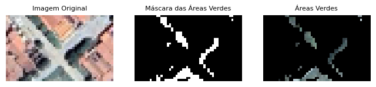
ic, gi, bwi, pb = perc_green_area(ga)
print(f'\nO percentual de áreas verdes é de {100 - pb:.2f}%\n')
graph_1(ic, 'Imagem Original Recortada',
gi, 'Imagem em Escala de Cinza',
bwi, 'Imagem Preto e Branco',
(8, 5))
O percentual de áreas verdes é de 9.55%
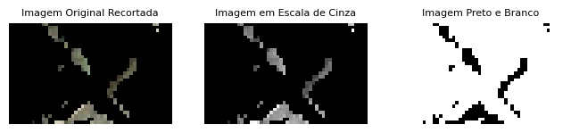
Rotulando Imagens
Aplicando funções criadas em rotulação de imagens, a partir de áreas verdes e suas mensurações.
import pandas as pd
data = []
for n, arch in enumerate(archives):
ir, _, ga = green_area(f'{folder}{arch}')
ic, _, _, pb = perc_green_area(ga)
data.append({
'Arquivo': arch,
'Área total': ir,
'Área verde': ic,
'Percentual de verde': (100 - pb)
})
# Criar o DataFrame
df = pd.DataFrame(data)
# Exportando CSV do DataFrame
df.to_csv('test.csv', index=False)
# Visualização de DataFrame
df.head()| Arquivo | Área total | Área verde | Percentual de verde | |
|---|---|---|---|---|
| 0 | fragment_areas_mescladas_rurais_1_0_0.png | [[[168, 165, 164], [181, 173, 180], [172, 165,... | [[[0, 0, 0], [0, 0, 0], [0, 0, 0], [0, 0, 0], ... | 0.129032 |
| 1 | fragment_areas_mescladas_rurais_1_0_1.png | [[[74, 76, 87], [111, 119, 127], [79, 83, 95],... | [[[0, 0, 0], [0, 0, 0], [0, 0, 0], [0, 0, 0], ... | 0.967742 |
| 2 | fragment_areas_mescladas_rurais_1_0_10.png | [[[99, 87, 99], [129, 124, 134], [123, 116, 12... | [[[0, 0, 0], [0, 0, 0], [0, 0, 0], [0, 0, 0], ... | 0.000000 |
| 3 | fragment_areas_mescladas_rurais_1_0_11.png | [[[91, 80, 87], [35, 28, 34], [35, 28, 35], [6... | [[[0, 0, 0], [0, 0, 0], [0, 0, 0], [0, 0, 0], ... | 0.000000 |
| 4 | fragment_areas_mescladas_rurais_1_0_12.png | [[[130, 132, 141], [129, 134, 141], [126, 126,... | [[[0, 0, 0], [0, 0, 0], [0, 0, 0], [0, 0, 0], ... | 0.258065 |
Realizando predição de percentual de áreas verdes
Configurando dados
# Definindo DataFrame para predizer porcentagens
df_per = df[['Área total', 'Percentual de verde']]
# Embaralhando linhas
df_per = df_per.sample(frac=1, random_state=7).reset_index(drop=True)
# Separando dados de treino
df_train = df_per[:5000]
# Separando dados de teste
df_test = df_per[5000:5500]
# Visualizando dados de treino
df_train.head()| Área total | Percentual de verde | |
|---|---|---|
| 0 | [[[152, 158, 164], [130, 135, 140], [130, 136,... | 9.548387 |
| 1 | [[[85, 71, 30], [86, 73, 32], [85, 71, 30], [8... | 86.645161 |
| 2 | [[[140, 137, 171], [154, 154, 188], [121, 123,... | 34.451613 |
| 3 | [[[146, 152, 163], [171, 172, 182], [160, 152,... | 1.612903 |
| 4 | [[[191, 190, 200], [201, 199, 208], [210, 204,... | 0.967742 |
# Definir a dimensão desejada para as imagens
desired_size = (128, 128) # Exemplo: 128x128 pixels
def resize_image(image_array, desired_size):
image = Image.fromarray(np.uint8(image_array))
image = image.resize(desired_size, Image.LANCZOS)
return np.array(image)
# Extrair e redimensionar imagens
images = np.array([resize_image(np.array(img), desired_size) for img in df_train['Área total']])
labels = np.array(df_train['Percentual de verde'].tolist())
# Normalização das imagens (valores de pixels entre 0 e 1)
images = images / 255.0
# Normalização dos rótulos (escala entre 0 e 1)
labels = labels / 100.0Arquitetura do modelo e treinamento dos dados
import tensorflow as tf
from tensorflow.keras import backend as K
from tensorflow.keras.models import Sequential
from tensorflow.keras.layers import Conv2D, MaxPooling2D, Flatten, Dense
from sklearn.model_selection import train_test_split
# Dividir os dados em conjuntos de treinamento e validação
X_train, X_val, y_train, y_val = train_test_split(images, labels, test_size=0.2, random_state=42)
# Construção do modelo CNN
model = Sequential([
Conv2D(32, (3, 3), activation='relu', input_shape=(desired_size[0], desired_size[1], 3)),
MaxPooling2D((2, 2)),
Conv2D(64, (3, 3), activation='relu'),
MaxPooling2D((2, 2)),
Conv2D(128, (3, 3), activation='relu'),
MaxPooling2D((2, 2)),
Flatten(),
Dense(64, activation='relu'),
Dense(1) # Saída para regressão
])
# Compilação do modelo
model.compile(optimizer='adam', loss='mean_squared_error', metrics=['mae'])
# Treinamento do modelo
history = model.fit(X_train, y_train, epochs=10, validation_data=(X_val, y_val), batch_size=32, verbose=1)
# Avaliação do modelo
loss = model.evaluate(X_val, y_val)
print(f'\nValidation Loss: {loss}')c:\Users\alexa\Desktop\Ícones\Estudos\UFRN\Mestrado\Códigos\Lib\site-packages\keras\src\layers\convolutional\base_conv.py:107: UserWarning: Do not pass an `input_shape`/`input_dim` argument to a layer. When using Sequential models, prefer using an `Input(shape)` object as the first layer in the model instead.
super().__init__(activity_regularizer=activity_regularizer, **kwargs)Epoch 1/10
125/125 ━━━━━━━━━━━━━━━━━━━━ 49s 344ms/step - loss: 0.8201 - mae: 0.4130 - val_loss: 0.0114 - val_mae: 0.0761
Epoch 2/10
125/125 ━━━━━━━━━━━━━━━━━━━━ 42s 338ms/step - loss: 0.0083 - mae: 0.0611 - val_loss: 0.0029 - val_mae: 0.0333
Epoch 3/10
125/125 ━━━━━━━━━━━━━━━━━━━━ 42s 336ms/step - loss: 0.0032 - mae: 0.0364 - val_loss: 0.0037 - val_mae: 0.0336
Epoch 4/10
125/125 ━━━━━━━━━━━━━━━━━━━━ 42s 335ms/step - loss: 0.0043 - mae: 0.0414 - val_loss: 0.0010 - val_mae: 0.0209
Epoch 5/10
125/125 ━━━━━━━━━━━━━━━━━━━━ 43s 341ms/step - loss: 0.0014 - mae: 0.0240 - val_loss: 0.0012 - val_mae: 0.0209
Epoch 6/10
125/125 ━━━━━━━━━━━━━━━━━━━━ 41s 326ms/step - loss: 0.0035 - mae: 0.0354 - val_loss: 0.0024 - val_mae: 0.0313
Epoch 7/10
125/125 ━━━━━━━━━━━━━━━━━━━━ 40s 318ms/step - loss: 0.0047 - mae: 0.0436 - val_loss: 0.0038 - val_mae: 0.0394
Epoch 8/10
125/125 ━━━━━━━━━━━━━━━━━━━━ 41s 324ms/step - loss: 0.0019 - mae: 0.0273 - val_loss: 7.9409e-04 - val_mae: 0.0169
Epoch 9/10
125/125 ━━━━━━━━━━━━━━━━━━━━ 40s 318ms/step - loss: 0.0020 - mae: 0.0256 - val_loss: 0.0039 - val_mae: 0.0395
Epoch 10/10
125/125 ━━━━━━━━━━━━━━━━━━━━ 41s 331ms/step - loss: 0.0018 - mae: 0.0261 - val_loss: 0.0020 - val_mae: 0.0316
32/32 ━━━━━━━━━━━━━━━━━━━━ 3s 85ms/step - loss: 0.0020 - mae: 0.0321
Validation Loss: [0.002033500000834465, 0.031632546335458755]Predição dos dados de teste
# Extraindo imagens teste e fazendo normalização
images_test = np.array([resize_image(np.array(img), desired_size) for img in df_test['Área total']])
images_test = images_test / 255.0
# Extraindo percentuais teste
labels_test = np.array(df_test['Percentual de verde'].tolist())
# Predizendo e revertendo a normalização das porcentagens
predictions = model.predict(images_test)
predictions = predictions * 10016/16 ━━━━━━━━━━━━━━━━━━━━ 1s 85ms/stepAvaliação de acurácia do modelo
from sklearn.metrics import mean_absolute_error, mean_squared_error, r2_score
# Calcular o erro absoluto médio (Mean Absolute Error - MAE)
mae = mean_absolute_error(labels_test, predictions)
print(f'MAE : {mae:.4f}')
# Calcular o erro quadrático médio (Mean Squared Error - MSE)
mse = mean_squared_error(labels_test, predictions)
print(f'MSE : {mse:.4f}')
# Calcular a raiz do erro quadrático médio (Root Mean Squared Error - RMSE)
rmse = np.sqrt(mse)
print(f'RMSE: {rmse:.4f}')
# Calcular o coeficiente de determinação (R²)
r2 = r2_score(labels_test, predictions)
print(f'R² : {r2:.4f}\n')
# Gráfico de treinamento
graph_2(history, 'mae')MAE : 3.0945
MSE : 19.5039
RMSE: 4.4163
R² : 0.9864
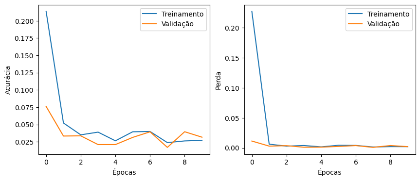
Resultado final do percentual real e predito
# Comparando com o DataSet
pd.DataFrame({'Real': labels_test,
'Predição': predictions.flatten()}).head()| Real | Predição | |
|---|---|---|
| 0 | 0.000000 | -0.461279 |
| 1 | 100.000000 | 97.196976 |
| 2 | 26.903226 | 15.845325 |
| 3 | 51.548387 | 44.579552 |
| 4 | 0.000000 | -0.436076 |
Realizando predição de áreas verdes
Configurando dados
# Definindo DataFrame para predizer porcentagens
df_av = df[['Área total', 'Área verde']]
# Definir a cor verde específica (RGB)
green_color = [0, 255, 0]
# Função para alterar os pixels não pretos para a cor verde
def apply_green_color(image_array, green_color):
# Criar uma máscara onde os pixels não são pretos (0, 0, 0)
mask = (image_array != [0, 0, 0]).any(axis=-1)
# Aplicar a cor verde aos pixels que não são pretos
image_array[mask] = green_color
return image_array
# Aplicar a função a cada imagem na coluna "Área verde". A função para alterar os pixels
# não pretos de forma que se tornem um único tipo de verde servirá para ajudar ao modelo
# na predição dos locais considerados áreas verdes, visto que ele só precisará destingui
# r entre duas cores, e não todo o espectro de cores que engloba as áreas verdes.
df_av.loc[:, 'Área verde'] = df_av['Área verde'].apply(lambda x: apply_green_color(np.array(x), green_color))# Embaralhando linhas
df_av = df_av.sample(frac=1, random_state=7).reset_index(drop=True)
# Separando dados de treino
df_train_av = df_av[:2000]
# Separando dados de teste
df_test_av = df_av[2000:2500]
# Visualizando dados de treino
df_train_av.head()| Área total | Área verde | |
|---|---|---|
| 0 | [[[152, 158, 164], [130, 135, 140], [130, 136,... | [[[0, 0, 0], [0, 0, 0], [0, 0, 0], [0, 0, 0], ... |
| 1 | [[[85, 71, 30], [86, 73, 32], [85, 71, 30], [8... | [[[0, 255, 0], [0, 255, 0], [0, 255, 0], [0, 2... |
| 2 | [[[140, 137, 171], [154, 154, 188], [121, 123,... | [[[0, 0, 0], [0, 0, 0], [0, 0, 0], [0, 0, 0], ... |
| 3 | [[[146, 152, 163], [171, 172, 182], [160, 152,... | [[[0, 0, 0], [0, 0, 0], [0, 0, 0], [0, 0, 0], ... |
| 4 | [[[191, 190, 200], [201, 199, 208], [210, 204,... | [[[0, 0, 0], [0, 0, 0], [0, 0, 0], [0, 0, 0], ... |
Arquitetura do modelo, treinamento e predição dos dados
# Extrair e redimensionar imagens
images_train = np.array([resize_image(np.array(img), desired_size) for img in df_train_av['Área total']])
labels_train = np.array([resize_image(np.array(img), desired_size) for img in df_train_av['Área verde']])
images_test = np.array([resize_image(np.array(img), desired_size) for img in df_test_av['Área total']])
labels_test = np.array([resize_image(np.array(img), desired_size) for img in df_test_av['Área verde']])
# Normalização das imagens (valores de pixels entre 0 e 1)
images_train = images_train / 255.0
labels_train = labels_train / 255.0
images_test = images_test / 255.0
labels_test = labels_test / 255.0import tensorflow as tf
from tensorflow.keras.models import Sequential
from tensorflow.keras.layers import Conv2D, MaxPooling2D, UpSampling2D, Flatten, Dense
from sklearn.model_selection import train_test_split
# Dividir os dados em conjuntos de treinamento e validação
X_train, X_val, y_train, y_val = train_test_split(images_train, labels_train, test_size=0.2, random_state=42)
# Construção do modelo CNN
model = Sequential([
Conv2D(32, (3, 3), activation='relu', padding='same', input_shape=(128, 128, 3)),
MaxPooling2D((2, 2), padding='same'),
Conv2D(64, (3, 3), activation='relu', padding='same'),
MaxPooling2D((2, 2), padding='same'),
Conv2D(64, (3, 3), activation='relu', padding='same'),
MaxPooling2D((2, 2), padding='same'),
UpSampling2D((2, 2)),
Conv2D(64, (3, 3), activation='relu', padding='same'),
UpSampling2D((2, 2)),
Conv2D(32, (3, 3), activation='relu', padding='same'),
UpSampling2D((2, 2)),
Conv2D(3, (3, 3), activation='sigmoid', padding='same')
])
# Compilação do modelo
model.compile(optimizer='adam', loss='binary_crossentropy', metrics=['mae'])
# Treinamento do modelo
history = model.fit(X_train, y_train, epochs=5, validation_data=(X_val, y_val), batch_size=128, shuffle=True, verbose=1)
# Fazer previsões com o modelo
predictions = model.predict(images_test)c:\Users\alexa\Desktop\Ícones\Estudos\UFRN\Mestrado\Códigos\Lib\site-packages\keras\src\layers\convolutional\base_conv.py:107: UserWarning: Do not pass an `input_shape`/`input_dim` argument to a layer. When using Sequential models, prefer using an `Input(shape)` object as the first layer in the model instead.
super().__init__(activity_regularizer=activity_regularizer, **kwargs)Epoch 1/5
13/13 ━━━━━━━━━━━━━━━━━━━━ 36s 2s/step - loss: 0.5088 - mae: 0.3634 - val_loss: 0.1955 - val_mae: 0.1262
Epoch 2/5
13/13 ━━━━━━━━━━━━━━━━━━━━ 34s 3s/step - loss: 0.2095 - mae: 0.1329 - val_loss: 0.1926 - val_mae: 0.1140
Epoch 3/5
13/13 ━━━━━━━━━━━━━━━━━━━━ 34s 3s/step - loss: 0.1793 - mae: 0.1156 - val_loss: 0.1415 - val_mae: 0.0983
Epoch 4/5
13/13 ━━━━━━━━━━━━━━━━━━━━ 34s 3s/step - loss: 0.1256 - mae: 0.0828 - val_loss: 0.1065 - val_mae: 0.0561
Epoch 5/5
13/13 ━━━━━━━━━━━━━━━━━━━━ 32s 2s/step - loss: 0.0881 - mae: 0.0501 - val_loss: 0.0767 - val_mae: 0.0416
16/16 ━━━━━━━━━━━━━━━━━━━━ 3s 172ms/stepAvaliação de acurácia do modelo
# Gráfico de treinamento
graph_2(history, 'mae')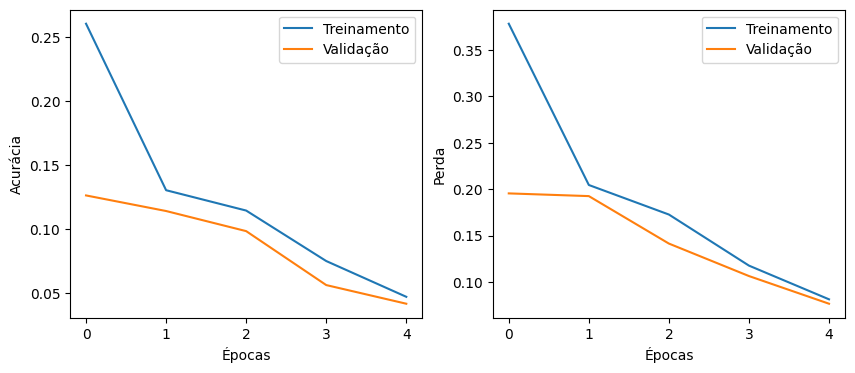
for i in range(30, 40):
# Gráfico para comparação
graph_1((images_test[i] * 255).astype(np.uint8), 'Área total',
(labels_test[i] * 255).astype(np.uint8), 'Área verde',
(predictions[i] * 255).astype(np.uint8), 'Área verde predita',
(8, 5))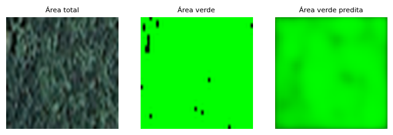
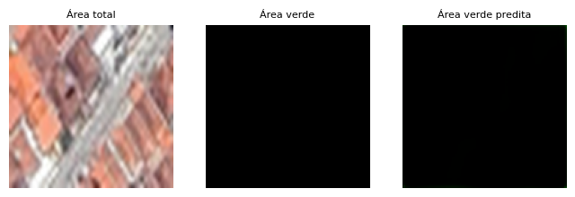
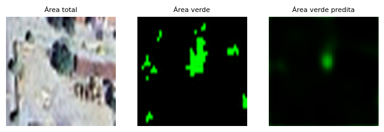
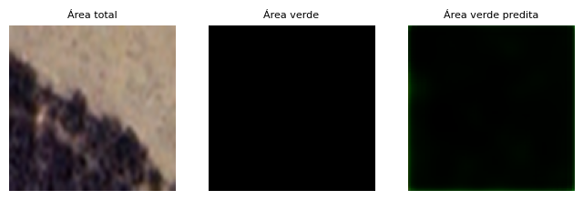
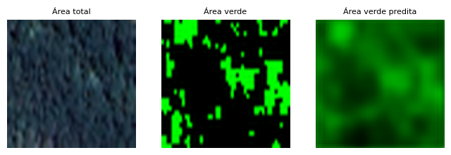
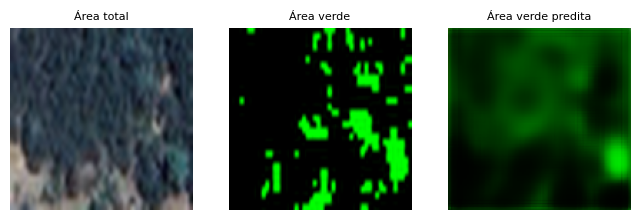
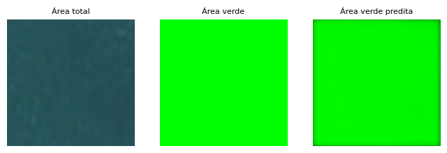
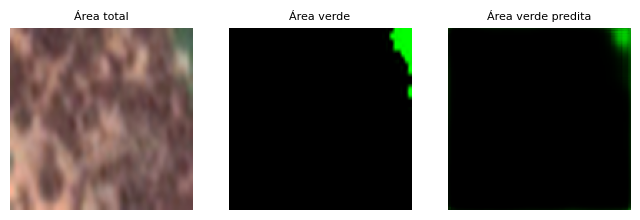
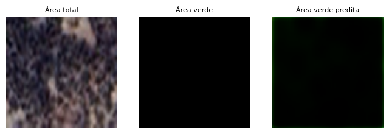
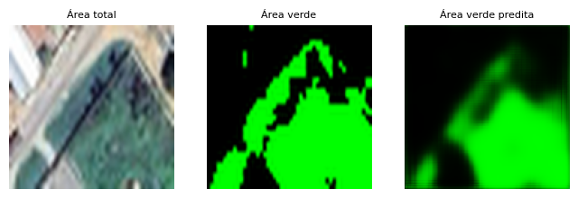
Considerações Finais
Os dois modelos usados para treinar são parecidos, porém a principal diferença é no formato da saída, onde o modelo de percentual de áreas verdes produz números, e o modelo de predição produz imagens. Os resultados se mostraram promissores, contudo sofrem de underfitting, devido a pouca quantidade de imagens e de épocas para treinamento. O modelo de predição de imagens em especial possui alguns outros problemas relacionados à rotulação, e podem ser contornados com as mudanças nos rótulos descritas a seguir.
- Áreas totalmente verdes de florestas:
- Imagens com 100% de cobertura verde.
- Áreas totalmente nao verdes de rios e mares:
- Imagens com 0% de cobertura verde.
- Áreas totalmente nao verdes urbanas:
- Imagens com 0% de cobertura verde.
- Áreas mescladas urbanas:
- Imagens com x% de cobertura verde.
- Áreas mescladas rurais:
- Imagens com x% de cobertura verde.